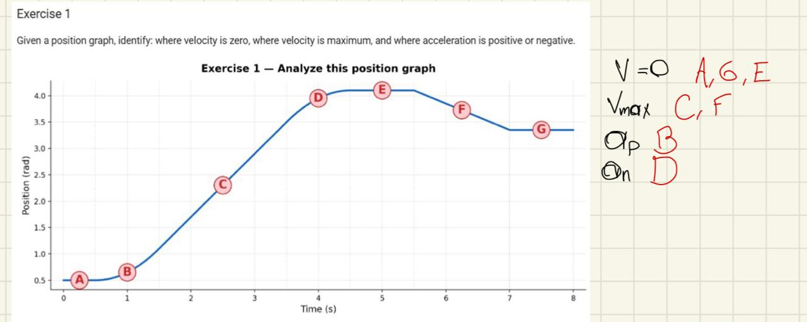
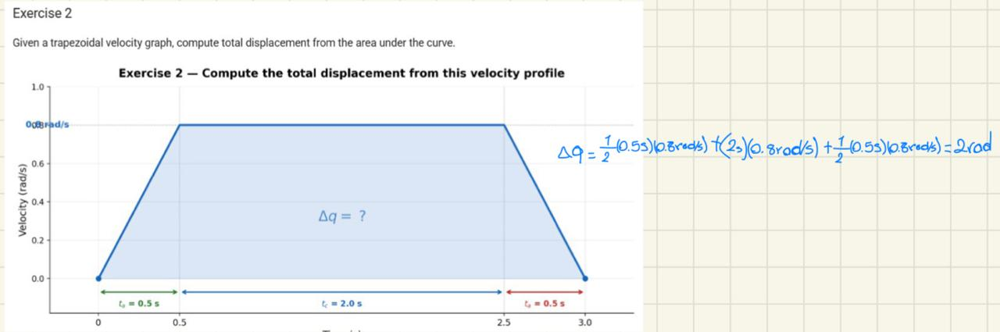
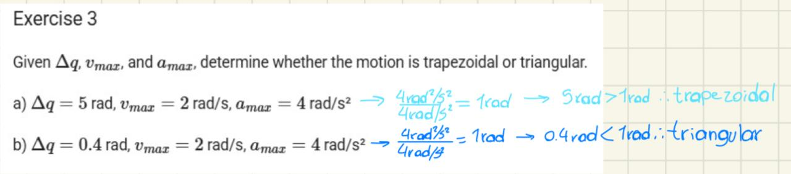
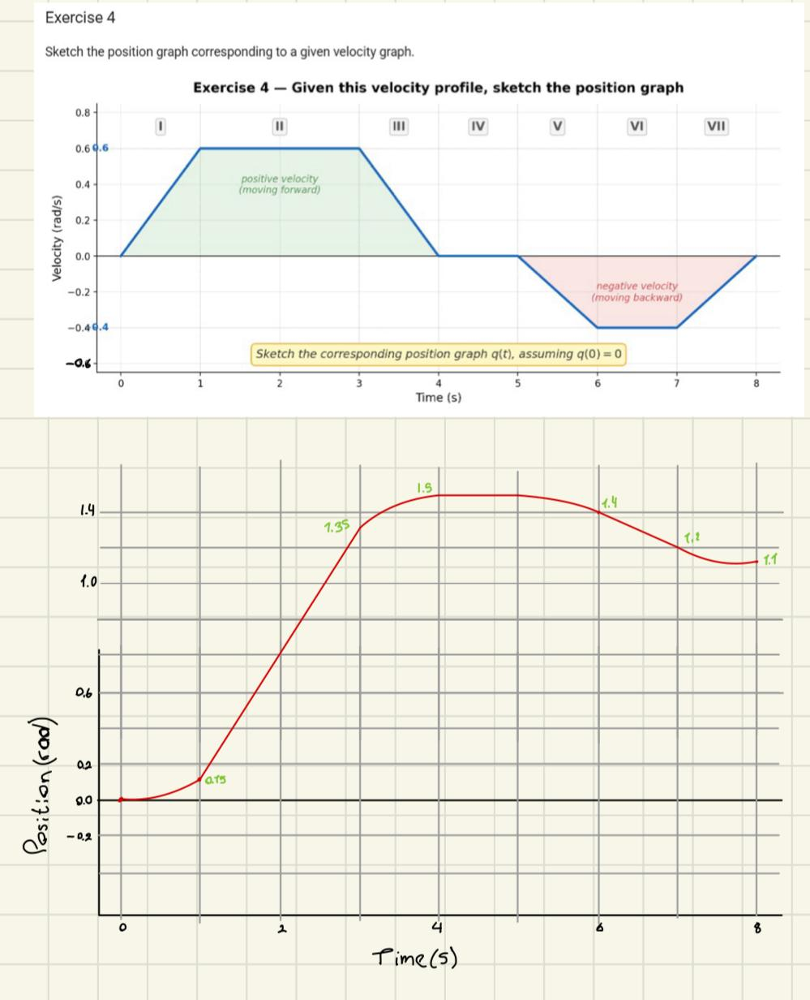
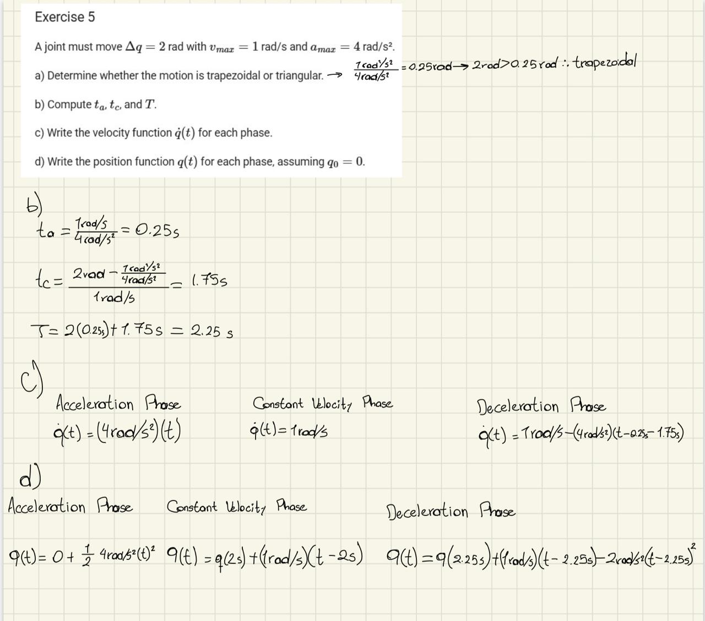
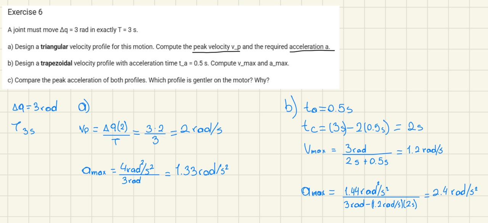

Trajectory Planning I: Speed, Acceleration Ramps, and Profiles
This documentation covers the fundamental concepts of joint-space trajectory generation, focusing on the relationship between position, velocity, and acceleration graphs.
1. Analysis of Kinematic Curves

Objective: Identify the physical state of the actuator based on the slope of the position graph. * Observation: In this exercise, we analyzed where velocity \(v(t)\) is zero (flat horizontal lines), where it reaches its maximum (steepest slope), and the sign of the acceleration \(a(t)\) based on the curvature of the displacement.2. Displacement via Integration (Area Under the Curve)

Objective: Calculate total displacement \(\Delta q\) using the geometric properties of the velocity profile. * Concept: Since \(q(t) = q(0) + \int \dot{q}(t) dt\), the total change in position corresponds to the area under the trapezoidal velocity curve. * Calculation: \(\Delta q = \text{Area}_{trapezoid} = \frac{(T + t_c) \cdot v_{max}}{2}\).3. Profile Classification: Trapezoidal vs. Triangular

Objective: Determine if a motion reaches its steady-state velocity \(v_{max}\) given physical constraints. * Condition: A triangular profile occurs if \(\Delta q < \frac{v_{max}^2}{a_{max}}\). * Case Study: * (a) \(\Delta q = 5\) rad: Results in a Trapezoidal profile (sufficient distance to cruise). * (b) \(\Delta q = 0.4\) rad: Results in a Triangular profile (acceleration exceeds half the distance before reaching \(v_{max}\)).4. Synthesis of Position from Velocity

Objective: Manually derive the position profile from a given piecewise velocity function. * Key Transitions: * Constant velocity \(\rightarrow\) Linear position ramp. * Constant acceleration (ramp in velocity) \(\rightarrow\) Parabolic position curve. * Zero velocity \(\rightarrow\) Constant position (dwell).5. Mathematical Modeling of a Trapezoidal Move

Objective: Full analytical derivation of a trajectory for \(\Delta q = 2\) rad, \(v_{max} = 1\) rad/s, and \(a_{max} = 4\) rad/s². * Results: * Acceleration time (\(t_a\)): 0.25 s * Cruise time (\(t_c\)): 1.75 s * Total time (\(T\)): 2.25 s * Equations: Documented the piecewise functions for \(q(t)\) across the three phases.6. Design Comparison: Triangular vs. Trapezoidal

Objective: Design a trajectory to meet a strict time constraint (\(T = 3\) s for \(\Delta q = 3\) rad). * Comparison: * Triangular: Requires higher peak velocity (\(v_p = 2\) rad/s) and higher acceleration. * Trapezoidal (\(t_a = 0.5\)s): Provides a smoother transition with \(v_{max} = 1.2\) rad/s. * Conclusion: The trapezoidal profile is preferred as it reduces mechanical jerk and motor stress.